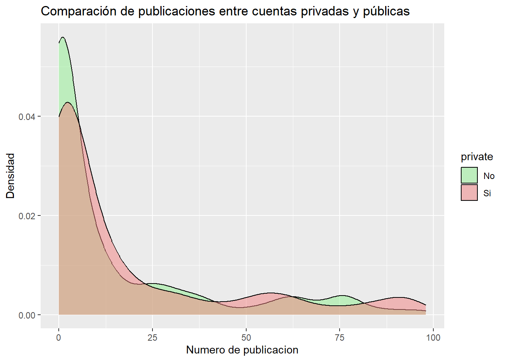
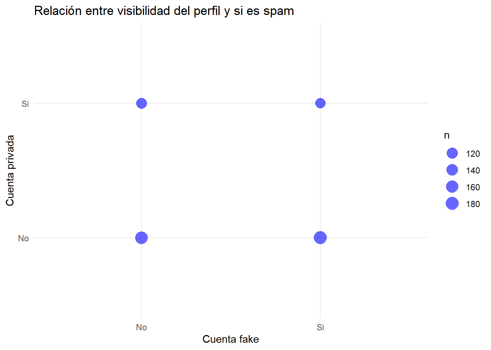
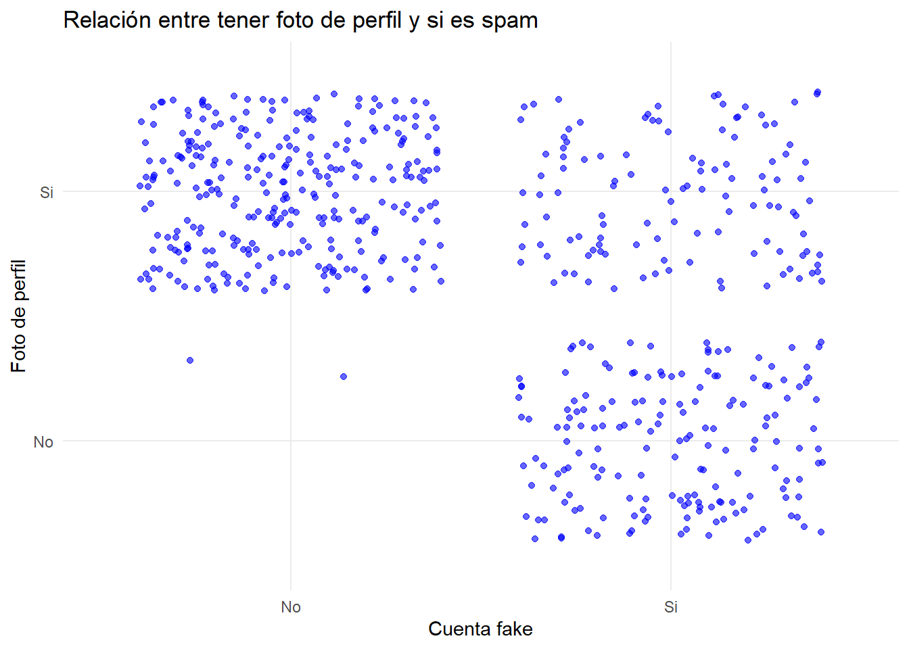
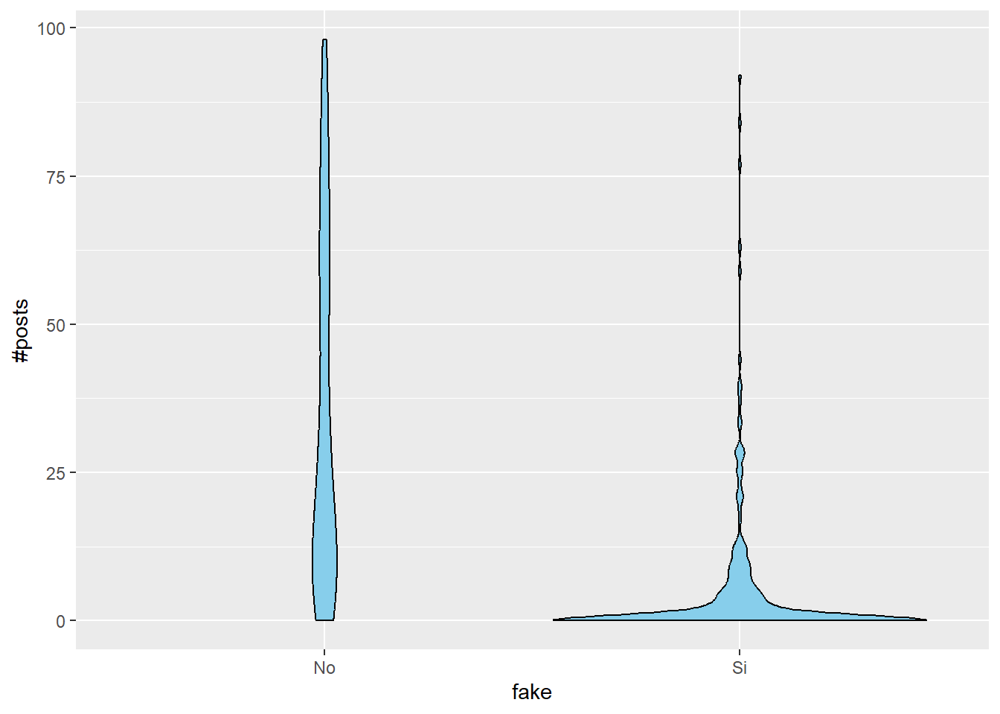
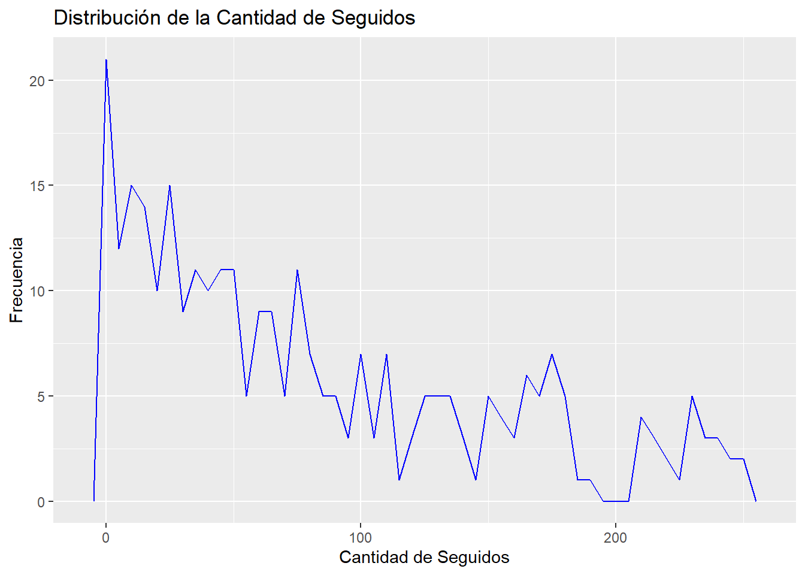
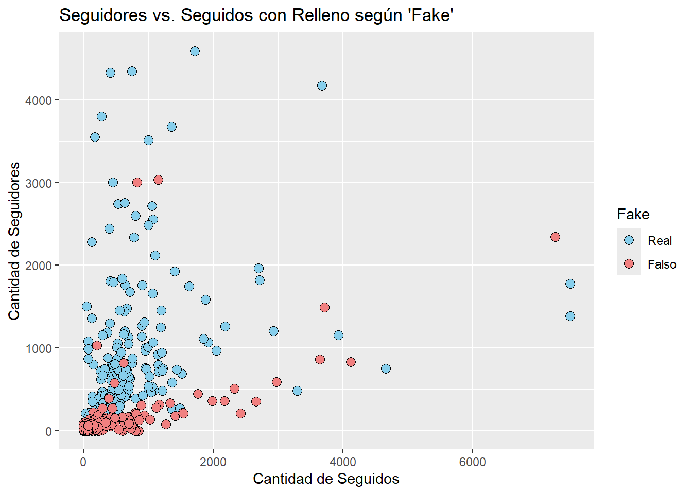
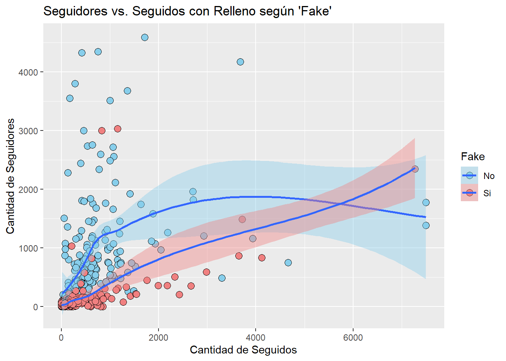
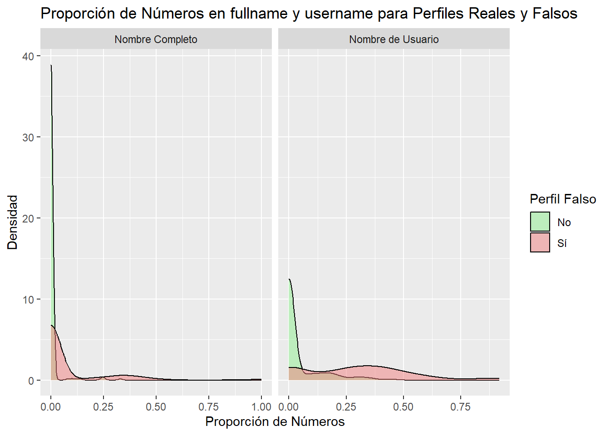
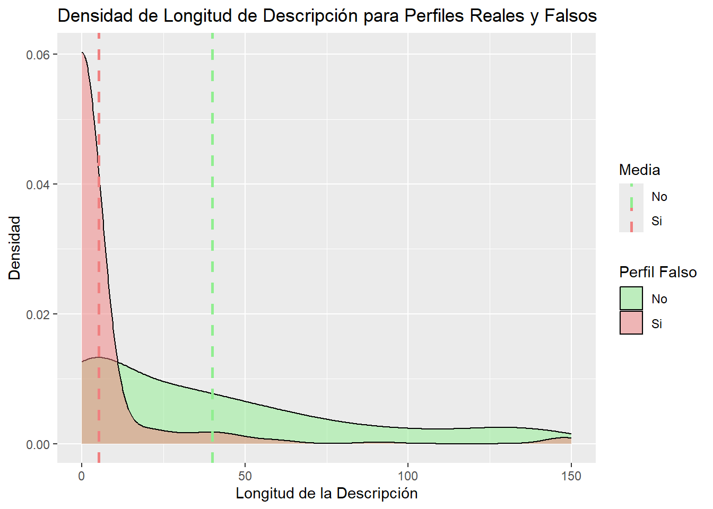

Ahora que ya hemos analizado en profundidad cada atributo de nuestro DataSet, vamos a necesitar algunos gráficos que nos den ideas sobre como continuar nuestro análisis.
Para ello vamos a utilizar al herramienta de ggplot2 , la cual nos va a permitir realizar los gráficos complejos de los que estamos hablando.
ggplot2: Create Elegant Data Visualisations Using the Grammar of Graphics
A system for ‘declaratively’ creating graphics, based on “The Grammar of Graphics”. You provide the data, tell ‘ggplot2’ how to map variables to aesthetics, what graphical primitives to use, and it takes care of the details.
The following objects are masked from 'package:stats':
filter, lag
The following objects are masked from 'package:base':
intersect, setdiff, setequal, union
datos <-read_csv("Data/train.csv")
Rows: 576 Columns: 12
── Column specification ────────────────────────────────────────────────────────
Delimiter: ","
dbl (12): profile pic, nums/length username, fullname words, nums/length ful...
ℹ Use `spec()` to retrieve the full column specification for this data.
ℹ Specify the column types or set `show_col_types = FALSE` to quiet this message.
2.1 Pre-procesado
Para poder hacer este trabajo mas fácil, vamos a realizar un pre-procesado de los datos primero. Vamos a convertir todos los atributos que son discretos a factores:
Nuestro atributos discretos, son binarios, solo tienen o bien Si o No. Vamos a emplear ahora los gráficos para poder encontrar alguna relación entre las variables y sobre todo, lo que mas no interesa, si alguna tiene relación con las cuentas de spam.
2.2 Comparación de la cantidad de publicaciones entre cuentas privadas y públicas
Para ver como se comportan ambos tipos de usuarios, vamos a empezar analizando el numero de publicaciones entre los usuarios con cuentas publicas y con cuentas privadas, para ello vamos ver las densidades utilizando geom_density :
posts_filtrados <- datos_refinados %>%filter(`#posts`<100)ggplot(data = posts_filtrados, aes( x =`#posts`,fill = private)) +geom_density(alpha =0.5) +labs(title ="Comparación de publicaciones entre cuentas privadas y públicas",x ="Numero de publicacion",y ="Densidad") +scale_fill_manual(values =c("lightgreen", "lightcoral"))

Vemos que ambos casos, nuestra gráfica se asemeja, por lo que el numero de publicaciones no depende de si es privada o publica.
Sin embargo, realmente a nosotros nos interese encontrar relaciones para intentar determinar si una cuenta es spammer o de un persona real. Por lo tanto vamos a centrarnos en comparar los atributos con el atributos spam.
2.3 Relación entre visibilidad del perfil y cuentas fake
Como nos interesa buscar las cuentas de spam, vamos a ver si la visibilidad del perfil (cuenta privada o publica), tiene algo que ver:
ggplot(datos_refinados, aes(x =`fake`, y =`private`)) +geom_count(color ="blue", alpha =0.6) +scale_size_area()+labs(title ="Relación entre visibilidad del perfil y si es spam", x ="Cuenta fake", y ="Cuenta privada")+theme_minimal()

Utilizando geom_count con dos variables discretas, en este caso si un perfil es privado o no y si un perfil es fake o no, no podemos extraer mucha información relevante ya que vemos que hay aproximadamente un numero similar de cada combinación.
2.4 Relación entre tener foto de perfil y ser cuenta fake
Al igual que antes vamos a comprobar dos variables discretas, por lo que el aspecto del gráfico sera diferente. Vamos a comprobar si tener o no foto de perfil tiene algo de relación con ser un spammer.
ggplot(datos_refinados, aes(x =`fake`, y =`profile pic`)) +geom_jitter(color ="blue", alpha =0.6) +scale_size_area()+labs(title ="Relación entre tener foto de perfil y si es spam", x ="Cuenta fake", y ="Foto de perfil")+theme_minimal()

Hemos obtenido un resultado interesante, donde vemos que las cuentas reales, todas menos 2 tienen foto de perfil puesta, mientras que las cuentas fake hay mas o menos un mismo numero con foto de perfil y sin foto de perfil. Estos datos, combinados con otros que vamos a obtener mas adelante, nos pueden ayudar a diferenciar cuentas reales de falsas.
2.5 Relación entre numero de publicaciones y cuentas fake
Podemos suponer una posible hipótesis en la que los usuarios spammers, cuya tarea puede ser solo generar comentarios o likes, van a tener cuentas con menos numero de publicaciones que una cuenta de una persona verdadera. Vamos a visualizar esta idea:
posts_filtrados <- datos_refinados %>%filter(`#posts`<100)ggplot(posts_filtrados, aes(x = fake, y =`#posts`)) +geom_violin(fill ="skyblue", color ="black")

Observamos que teníamos razón, despues de eliminar aquellas cuentas con muchos post, vemos que las cuentas falsas suelen tener un numero reducido de publicaciones, mientras que las cuentas normales suelen tener una distribución mas uniforme.
2.6 Análisis de numero de seguidores
Unos de los atributos mas relevantes pueden ser el numero de seguidores el numero de seguidos, por lo quenecesitamos analizarlos en profundidad. Vamos a comenzar con el numero de seguidores.
Primero, como en el análisis exploratorio observamos que había algunas cuentas con muchos seguidores pero que no representaban un numero importante, vamos a eliminar esas escasas cuentas con un numero alto de seguidores con el fin de que los gráficos sean mas entendibles.
followers_filtrados <- datos_refinados %>%filter(`#followers`<1500)ggplot(followers_filtrados, aes(x =`#followers`)) +geom_histogram(binwidth =10, color ='black') +labs(title ="Histograma de seguidores",x ="Cantidad de Seguidores",y ="Frecuencias")
Vemos que se concentra la mayoría en menos de 250 seguidores.
Vamos a utilizar una gráfica de frecuencia para ver como son nuestros datos con menos de 250 seguidores.
followers_filtrados <- datos_refinados %>%filter(`#followers`<250)ggplot(followers_filtrados, aes(x =`#followers`)) +geom_freqpoly(color ="blue", binwidth =5) +labs(title ="Distribución de la Cantidad de Seguidores",x ="Cantidad de Seguidores",y ="Frecuencia")
La mayor concentración se encuentra en menos de 100 seguidores y que es decreciente la frecuencia a medida que aumenta el numero de seguidores.
2.6.1 Comparación del numero de seguidores entre cuentas reales y falsas
Como nuestro principal objetivo es poder encontrar características similares que tengan las cuentas falsas para poder encontrarlas fácilmente, vamos a visualizar este atributo en relación con el numero de seguidores. Ademas añadimos las medias para obtener mas información.
mean_values <- followers_filtrados %>%group_by(fake) %>%summarize(mean_followerss =mean(`#followers`))ggplot(data = followers_filtrados, aes( x =`#followers`,fill =`fake`)) +geom_density(alpha =0.5) +labs(title ="Comparación de seguidores entre cuentas reales y falsas", x ="Numero de seguidores", y ="Densidad") +scale_fill_manual(values =c("lightgreen", "lightcoral"))+geom_vline(data = mean_values, aes(xintercept = mean_followerss, color = fake), linetype ="dashed", size =1) +geom_text(data = mean_values, aes(x = mean_followerss, y =0, label =round(mean_followerss, 1), color = fake),vjust =-0.5, hjust =-0.1, size =4, fontface ="bold") +scale_color_manual(values =c("lightgreen", "lightcoral"), name ="Media")
Warning: Using `size` aesthetic for lines was deprecated in ggplot2 3.4.0.
ℹ Please use `linewidth` instead.
Aquí y obtenemos información mas interesante. Podemos observar que las cuentas falsas tienen a tener un menor numero de seguidores, mientras que las cuentas reales, aunque no tienen muchos seguidores, se suelen mantener en un intervalo entre 50 y 250. Esta información nos puede ser de importancia para los cálculos futuros.
2.7 Análisis de numero de seguidos
Ahora que hemos ya explorados gracias a varios gráficos como se comporta el numero de seguidores segun el tipo de cuentas, vamos a continuar ahora con el numero de seguidos.
Primero, como en el análisis exploratorio observamos que había algunas cuentas con muchos seguidos, pero que no representaban un numero importante, vamos a eliminar esas escasas cuentas con un numero alto de seguidos con el fin de que los gráficos sean mas entendibles.
follows_filtrados <- datos_refinados %>%filter(`#follows`<1000) ggplot(follows_filtrados, aes(x =`#follows`)) +geom_histogram(binwidth =10, color ='black') +labs(title ="Histograma de seguidos", x ="Cantidad de Seguidos", y ="Frecuencias")
Vemos que se concentra la mayoría en menos de 250 seguidos.
Vamos a utilizar una gráfica de frecuencia para ver como son nuestros datos con menos de 250 seguidos.
follows_filtrados <- datos_refinados %>%filter(`#follows`<250) ggplot(follows_filtrados, aes(x =`#follows`)) +geom_freqpoly(color ="blue", binwidth =5) +labs(title ="Distribución de la Cantidad de Seguidos", x ="Cantidad de Seguidos", y ="Frecuencia")

La mayor concentración se encuentra en menos de 100 seguidos y que es decreciente la frecuencia a medida que aumenta el numero de seguidores.
2.7.1 Comparación del numero de seguidos entre cuentas reales y falsas
Como nuestro principal objetivo es poder encontrar características similares que tengan las cuentas falsas para poder encontrarlas fácilmente, vamos a visualizar este atributo. Ademas añadimos las medias para obtener mas información.
follows_filtrados <- datos_refinados %>%filter(`#follows`<550) mean_values <- follows_filtrados %>%group_by(fake) %>%summarize(mean_follows =mean(`#follows`))ggplot(data = follows_filtrados, aes( x =`#follows`,fill =`fake`)) +geom_density(alpha =0.5) +labs(title ="Comparación de seguidos entre cuentas reales y falsas", x ="Numero de seguidos", y ="Densidad") +scale_fill_manual(values =c("lightgreen", "lightcoral"))+geom_vline(data = mean_values, aes(xintercept = mean_follows, color = fake), linetype ="dashed", size =1) +geom_text(data = mean_values, aes(x = mean_follows, y =0, label =round(mean_follows, 1), color = fake),vjust =-0.5, hjust =-0.1, size =4, fontface ="bold") +scale_color_manual(values =c("lightgreen", "lightcoral"), name ="Media")
Aquí, al igual que con lo seguidores, obtenemos información mas interesante. Podemos observar que las cuentas falsas tienen a tener un menor numero de seguidores, pero no tan cercano al 0, mientras que las cuentas reales, suelen tener un numero mas repartido de seguidos. Esta información nos puede ser de importancia para los cálculos futuros.
2.8 Relación entre numero de seguidores y numero de seguidos
Ahora que la hemos visto ambas variables por separado, vamos a utilizar los gráficos de puntos o dispersión para ver varias variables juntas para intentar ver alguna relación o característica en estas.
followers_filtrados <- datos_refinados %>%filter(`#followers`<5000)ggplot(data = followers_filtrados, aes(x =`#follows`, y =`#followers`)) +geom_point(shape =4, size =3) +labs(title ="Seguidores vs. Seguidos",x ="Cantidad de Seguidos",y ="Cantidad de Seguidores")+scale_fill_manual(values =c("skyblue", "lightcoral"))
Viendo este gráfico solo podemos obtener que casi todo se concentra a un numero reducido tanto de seguidos y seguidores.
Aunque dicha información no nos sirve de mucho, vamos a añadir el parametro para diferenciar cuentas fake y reales. Podemos pensar que los seguidores y los seguidos tienen algo de relación con los usuarios que son fake, vamos a refinar un poco el DataSet eliminando los usuarios que tenian muchos seguidores, vamos a investigar:
followers_filtrados <- datos_refinados %>%filter(`#followers`<5000)ggplot(data = followers_filtrados, aes(x =`#follows`, y =`#followers`, fill =fake)) +geom_point(shape =21, size =3) +labs(title ="Seguidores vs. Seguidos con Relleno según 'Fake'",x ="Cantidad de Seguidos",y ="Cantidad de Seguidores",fill ="Fake") +scale_fill_manual(values =c("skyblue", "lightcoral"), labels =c("Real", "Falso"))

Aquí podemos ver que hay una cierta tendencia. Las cuentas fake suelen tener mas cuentas seguidas que seguidores .Esto puede ser debido a que al ser cuentas generadas automaticamente, seguir a otra cuenta es una tarea que se puede automatizar, mientras que conseguir seguidores es algo mas complicado y requiere que de una segunda persona para que le siga. Vamos a utilizar el atributo de geom_smooth para poder visualizar una posible tendencia
ggplot(data = followers_filtrados, aes(x =`#follows`, y =`#followers`, fill = fake)) +geom_point(shape =21, size =3) +geom_smooth(method ="loess")+labs(title ="Seguidores vs. Seguidos con Relleno según 'Fake'",x ="Cantidad de Seguidos",y ="Cantidad de Seguidores",fill ="Fake") +scale_fill_manual(values =c("skyblue", "lightcoral") )
`geom_smooth()` using formula = 'y ~ x'

Ahora podemos reafirmar la idea de esa posible tendencia gracias a este gráfico. Vemos que los puntos rojos (fake) se ajustan en a la linea roja. Sin embargo las cuentas verdaderas tiene una tendencia mas dispersa.
2.9 Importancia presencia de caracteres numéricos en usuario y nombre
Encontrar caracteres numéricos en nombre de usuario y nombres completos es algo que de primeras no podemos asociar a ningún tipo de cuenta, por lo tanto, nos vemos en la necesidad de analizarlo mas en profundidad
#Tenemos que duplicar los datos para poder poner una grafica al lado de otra#Pivot_longer elimina las columnas conbinandola en dos columnas con el nombre y el valorlibrary(tidyr)
Attaching package: 'tidyr'
The following object is masked from 'package:magrittr':
extract
datos_comb <- datos_refinados %>%pivot_longer(cols =c(`nums/length fullname`, `nums/length username`), names_to ="variable", values_to ="value")ggplot(data = datos_comb, aes(x = value, fill = fake)) +geom_density(alpha =0.5, adjust =1) +labs(title ="Proporción de Números en fullname y username para Perfiles Reales y Falsos",x ="Proporción de Números",y ="Densidad",fill ="Perfil Falso") +scale_fill_manual(values =c("lightgreen", "lightcoral"), labels =c("No", "Sí")) +facet_wrap(~variable, scales ="free_x", labeller =as_labeller(c(`nums/length fullname`="Nombre Completo", `nums/length username`="Nombre de Usuario")))

Podemos ver que realmente si hay una relación entre la presencia de caracteres numéricos en el nombre y el nombre de usuario respecto a si la cuenta es verdadera o spammer.
Podemos concluir que la cuentas falsas suelen contener mayor numero de caracteres numéricos en el nombre o nombre de usuario que las cuentas verdaderas.
2.10 Relación entre longitud de la descripción para perfiles reales y perfiles falsos
Por ultimo, otra posible hipótesis posible puede ser pensar que los usuarios falsos, tienen descripciones vacías o menos elaboradas que las de los perfiles reales.
ggplot(data = datos_refinados, aes(x =`description length`, fill = fake)) +geom_density(alpha =0.5) +labs(title ="Densidad de Longitud de Descripción para Perfiles Reales y Falsos",x ="Longitud de la Descripción",y ="Densidad") +scale_fill_manual(values =c("lightgreen", "lightcoral"))
Y podemos comprobar que dicha idea era cierta, los perfiles falsos suelen tener un numero reducido de caracteres en su descripción, mientras que los reales esta mas repartidos.
Vamos a visualizar las medias:
mean_values <- datos_refinados %>%group_by(fake) %>%summarize(mean_desc_length =mean(`description length`))ggplot(data = datos_refinados, aes(x =`description length`, fill =fake)) +geom_density(alpha =0.5) +labs(title ="Densidad de Longitud de Descripción para Perfiles Reales y Falsos",x ="Longitud de la Descripción",y ="Densidad",fill ="Perfil Falso") +scale_fill_manual(values =c("lightgreen", "lightcoral"))+geom_vline(data = mean_values, aes(xintercept = mean_desc_length, color = fake), linetype ="dashed", size =1) +scale_color_manual(values =c("lightgreen", "lightcoral"), name ="Media")

2.11 Conclusiones
Vistos todos los gráficos anteriores, podemos sacar algunas conclusiones interesantes:
Las cuentas falsas tienen menor numero de seguidores y mayor seguidos.
Las cuentas reales tienen descripciones con longitudes mas largas.
Las cuentas falsas tiene mas cantidad de caracteres numéricos en el nombre completo y nombre de usuario.
Las cuentas reales siempre suelen tener foto de perfil.